U800
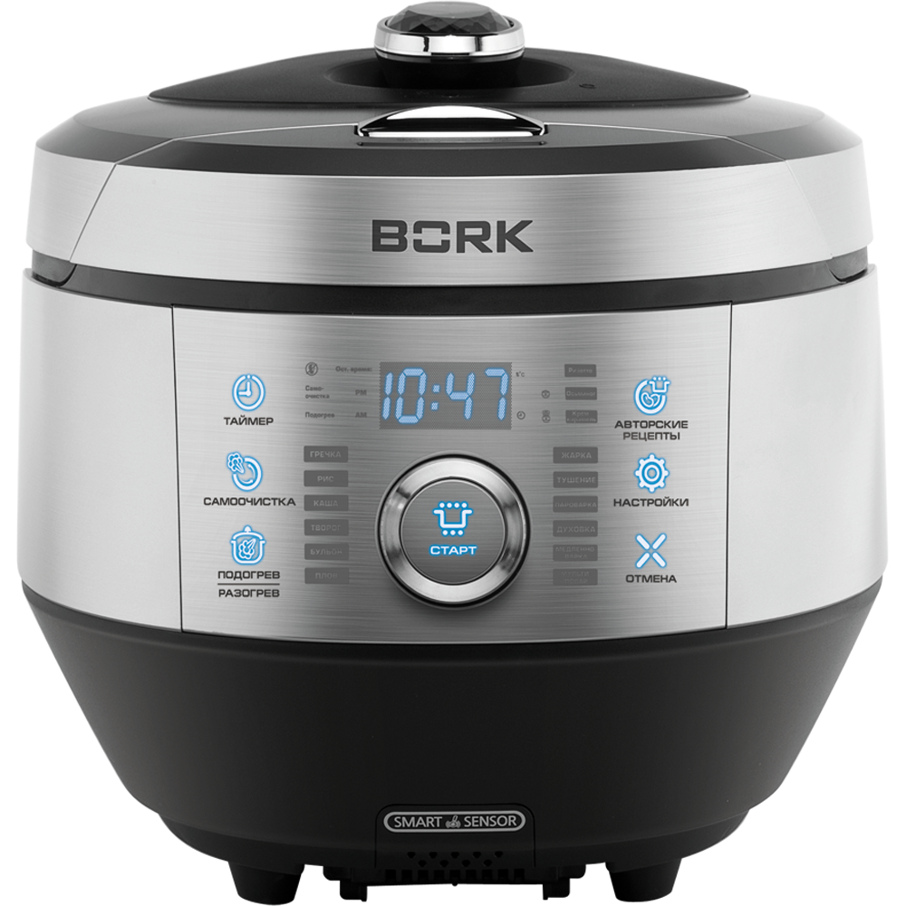Технические характеристики
Мощность: 1400 Вт
Общий объем чаши: 5 л
Полезный объем чаши: 3 л
Тип чаши: Многослойная
Материал корпуса: Пластик
Тип управления: Сенсорное
Тип нагревательного элемента: Индукционный
Приготовление под давлением: Да
Вес: 7.5 кг
Цвет: Серебристо/черный
Страна производитель: Корея
Комплектация
Книга с рецептами
Решетка пароварки
Мерный стакан 2 шт
Ложка: 1 шт
Особенности
Авторские рецепты от итальянского шеф-повара — одной кнопкой

Для приготовления изысканного итальянского блюда достаточно одного нажатия кнопки. С помощью мультишефа U800 можно приготовить не только привычную любимую пищу, но и порадовать себя и близких гастрономическими шедеврами по авторским рецептам итальянского шеф-повара: ризотто с морепродуктами, осьминог по- лигурийски и крем-карамель. Для каждого рецепта предусмотрена автоматическая программа приготовления.
Мультишеф bork — первый интеллектуальный робот-повар
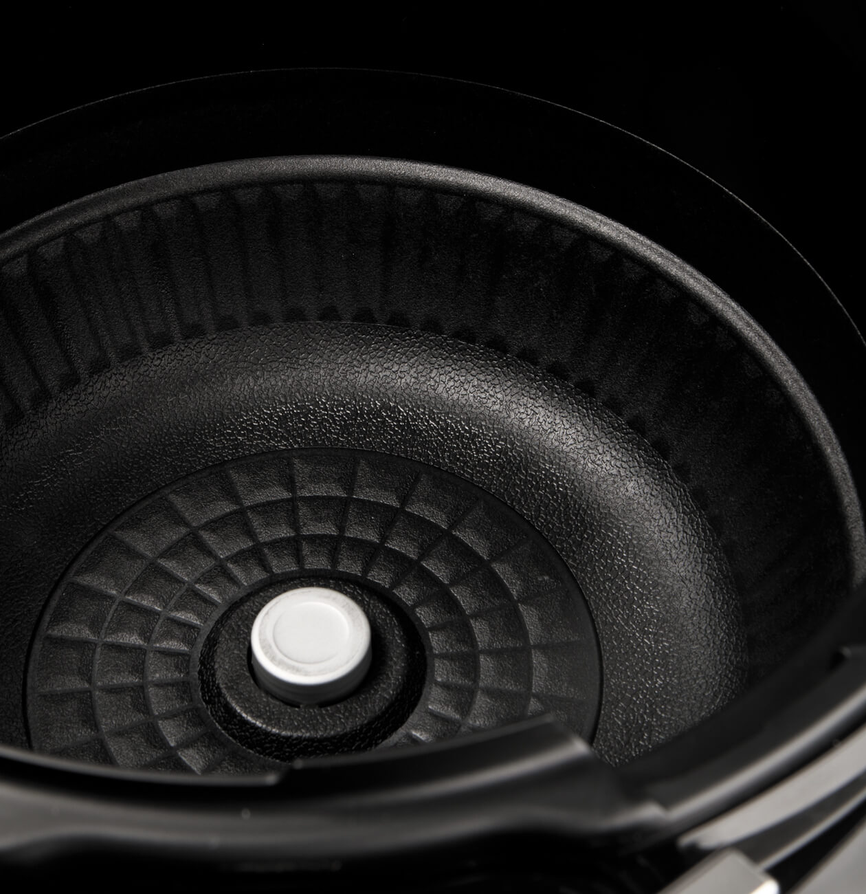IQ-система автоматизированного приготовления берет на себя полный контроль процесса приготовления: регулирует время и температуру по технологии«1+1»™, а также давление, в зависимости от выбранного блюда и количества ингредиентов. Голосовые подсказки позволяют обходиться без инструкции и обеспечивают безопасность использования.
Электромагнитный клапан сброса пара
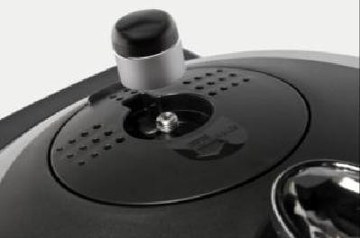Электромагнитный (соленоидный) клапан обеспечивает автоматический сброс пара. Благодаря электромагнитному клапану Мультишеф может работать в режиме скороварки. Работу электромагнитного клапана контролирует микропроцессор.
Фирменный дизайн и интелектуальное управление
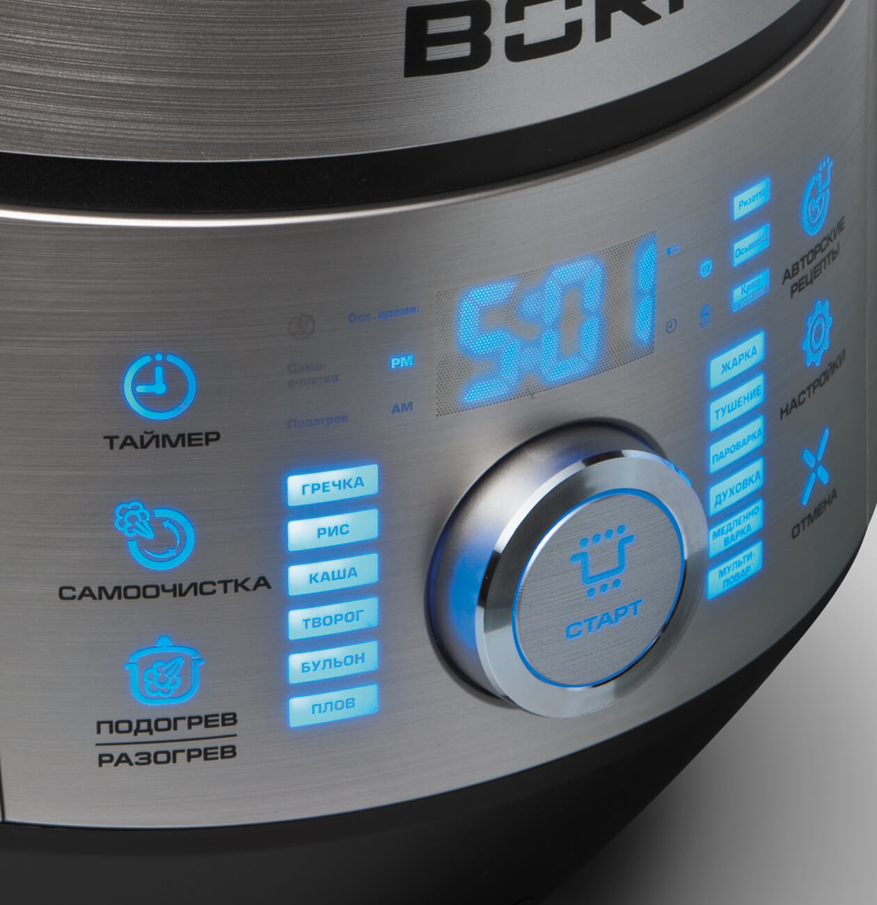Мультишеф BORK U800 выполнен в фирменном стиле BORK Управление Мультишефа интуитивно понятное и сопровождается голосовыми подсказками .Сенсорная панель оснащена управлением Шатл/Schulte, что бесспорно является самым удобным и современным типом управления. С помощью данного регулятора выбираются программы приготовления.
Панель управления
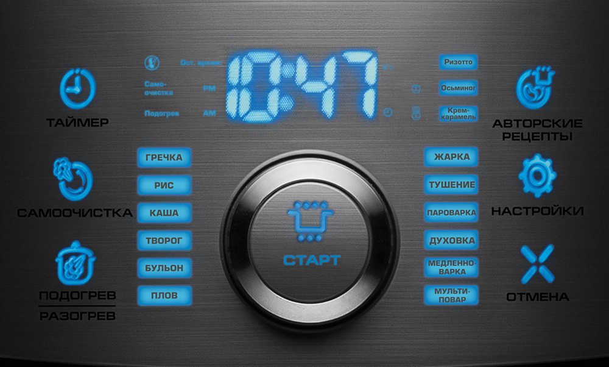Функция отложенного старта
Благодаря встроенной функции отложенного старта Мультишеф позаботится о вашем горячем завтраке. Если у вас нет времени для того, чтобы приготовить ужин, Мультишеф сделает это за вас. Достаточно заранее заложить продукты, выбрать нужный режим и блюдо приготовится к намеченному времени. Нажмите кнопку ТАЙМЕР. Задайте время окончания приготовления с помощью регулятора. Для подтверждения нажмите кнопку НАСТРОЙКА. Шаг установки — 10 минут. Выберите программу с помощью регулятора и нажмите кнопку Старт. Проверьте правильность установки текущего времени.
Установка настроек
С помощью кнопки НАСТРОЙКА Вы можете выставить время, изменить уровень громкости от 0-4, температуру подогрева, В режимах приготовления изменяются параметры времени и температуры с помощью НАСТРОЙКА.
Функция подогрев/разогрев функция smart warm
Для того, что приготовленное блюдо не остывало можно использовать функцию ПОДОГРЕВ.
С помощью кнопки НАСТРОЙКА вы можете предварительно выбрать удобную для вас температуру подогрева от 60 - 77ºС.
Функция SMART WARM оповестит вас о длительности поддержания определенной температуры во время подогрева. Индикатор Smart Warm расположен на верхней части крышки. Его цвет будет меняться в зависимости от длительности подогрева:
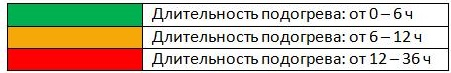Максимальное время режима Подогрев 36 часов.
РАЗОГРЕВ используется для разогрева готового блюда. Длительность 15 мин Для активации функции нажмите кнопку Разогрев два раза.
Разогрев является сенсорным, так как способен отличить холодную пищу от теплой, подбирая для каждого, варианта, подходящую температуру.
Самоочистка
Функция САМООЧИСТКА упрощает чистку чаши и прочистки клапана выхода пара от стойких загрязнений.
Для запуска режима САМООЧИСТКА залейте в чашу 2 мерных стакана воды, после чего закройте крышку и заблокируйте ее. Нажмите кнопку самоочистка.
Время работы — 16 мин.
Режимы работы
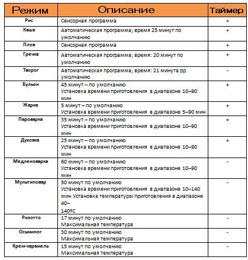Чаша
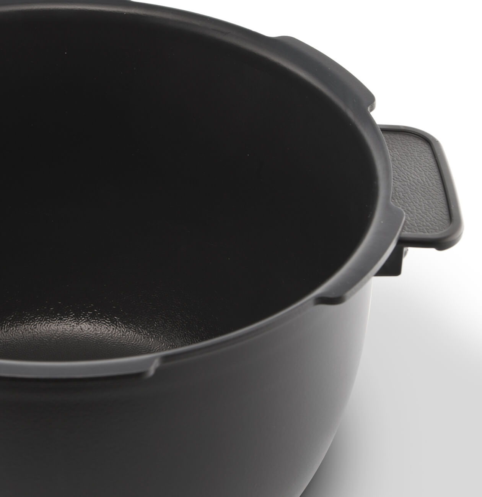Многослойная чаша Мультишефа обладает свойствами казана, кастрюли, сковороды, духовки благодаря правильной теплопроводности и теплоемкости. Чаша оснащена удобными, термостойкими рукоятками благодаря, которым чаша легко извлекается сразу после приготовления блюд. Общий объем чаши – 5 литров.
Полезный объем чаши – 3 литра. Для удобства чаша оснащена рисками.
WRINKLE – Ребристое антипригарное покрытие с повышенным инфракрасным спектром, обеспечивающее защиту от механических воздействий.
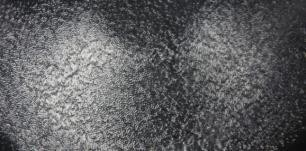Данное покрытие напоминающее «морщины» обладает большей площадью в сравнении с обычными гладкими покрытиями, таким образом, теплоотдача поверхности чаши увеличена за счет увеличение инфракрасного спектра.
TOP – Антипригарное покрытие предотвращает пригорание пищи к поверхности чаши. Является первым звеном в работе всего антипригарного комплекса.
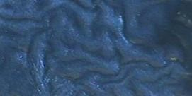PRIMER Charcoal – антикоррозийное покрытие с добавлением порошкового активированного угля. Так как основано на экологически чистом материале, этот материал по своим свойствам можно сравнить с сажей на старой чугунной кухонной сковороде. Свойства этого материала уникальны тем, что само восстанавливается.
Это способствует длительному использованию посуды.
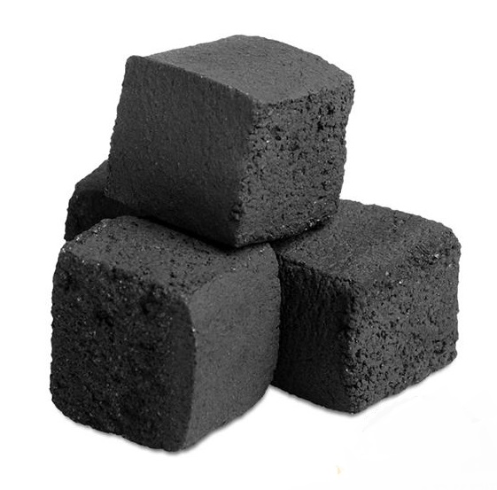Во время готовки пищи, когда масло нагревается и происходит микрохимическая реакция, в это время посуда, которая не имеет угольное покрытие, сгорает. В этом и есть разница, во время приготовления угольное покрытие выступает в качестве защитного покрытия, которое не допускает касания пищи, самого метала, и впоследствии возникновения сгорания и неприятного привкуса в еде.
PRE PRIMER
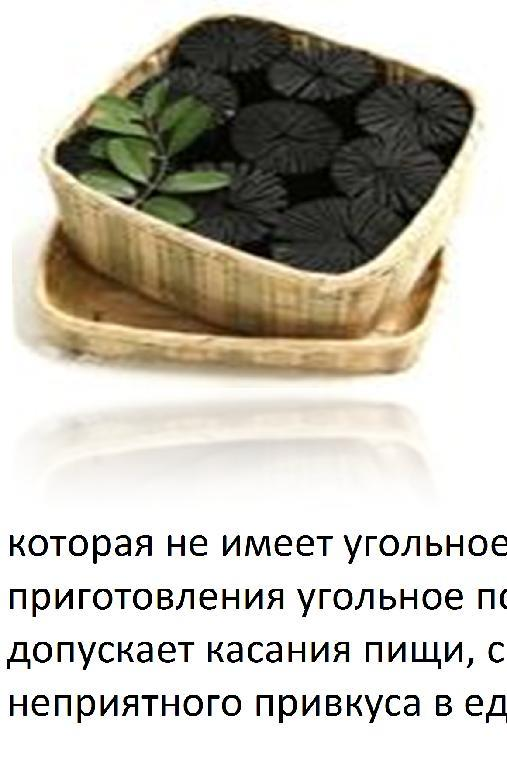Покрытие с повышенной прочностью с антикоррозийными свойствами AL – Сплав алюминия обладающего высокой теплопроводностью.
STS – Сплав нержавеющей стали, обладающий феромагнитными свойствами AL – Сплав алюминия обладающего высокой теплопроводностью.
STS – Сплав нержавеющей стали, обладающий феромагнитными свойствами.
Режим энергосбережения
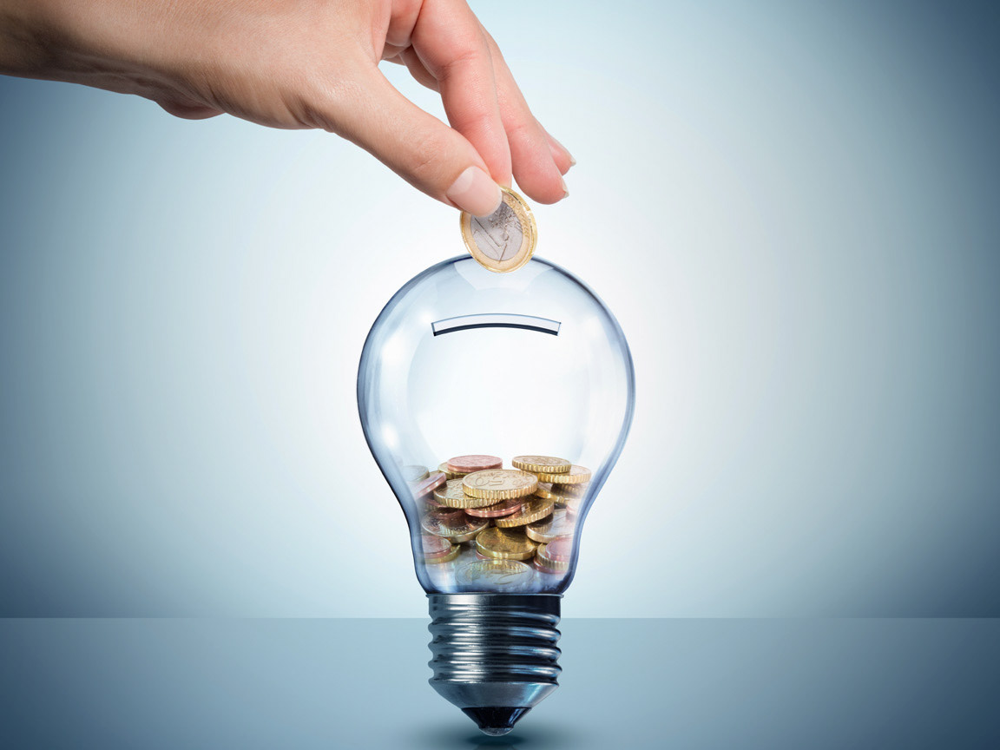Если в течение 1 минуты ни одна из кнопок не была активирована, прибор автоматически переключится в энергосберегающий режим.
Прибор выйдет из этого режима при нажатии любой кнопки или повороте рычага блокировки крышки.
Режим «демо»
Данный режим позволяет одновременно задействовать всю панель управления, тем самым демонстрирую все индикаторы. В демо режиме Мультишеф находится в энергосберегающем режиме. Активация «Демо» режима: Одновременное нажатие кнопок: ПОДОГРЕВ/РАЗОГРЕВ+АВТОРСКИЕ РЕЦЕПЫ
Безопасность
Мультишеф BORK U800 позаботится не только о вашем желудке, но и о вашей безопасности!
Как вся линейка индукционных Мультишефов BORK, модель U800 оснащена множеством систем защит: защита от скачков напряжения в сети, от перегрева чаши, от перегрева процессора, от перегрева индукторов, защита от открывания крышки в процессе приготовления, защита от включения без чаши, защита от включения с открытой крышкой, рычаг блокировки крышки, голосовой гид подсказывающий правильность действий, система сенсоров и температурных датчиков контролирующих этапы работы прибора, и многое другое.
Интелект

Все системы безопасности и процессы приготовления контролирует микропроцессор, благодаря которому Мультишеф BORK U800 является интеллектуальным прибором.
«Умный повар на вашей кухне»
Это изречение характеризует Мультишефа как отзывчивого, послушного устройства и понимающего, что ваша безопасность превыше всего!